DIRECT
CONTACT / LEW3L1
Есть канал?
Поговорим.
Для сотрудничества, настройки ботов или вопросов по модерации — выбери удобный способ связи.
WORK WITH ME
Что могу взять на себя
01Модерация
02Чат-боты
03Настройка канала

CONTACT / LEW3L1
Для сотрудничества, настройки ботов или вопросов по модерации — выбери удобный способ связи.
DIRECT
WORK WITH ME